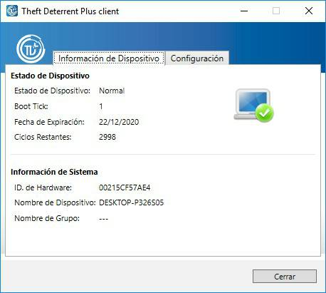
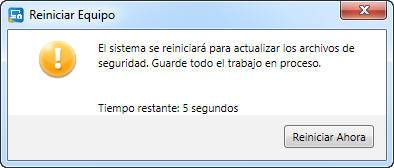
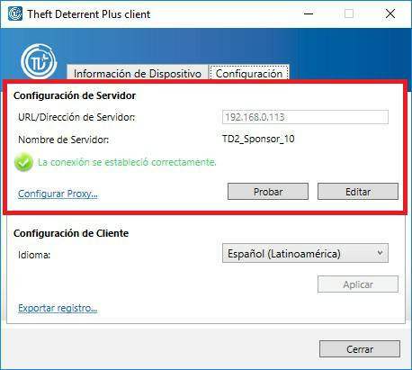
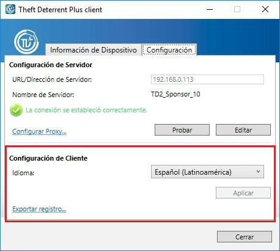
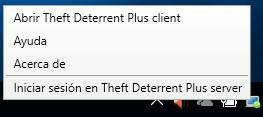

Visualizar y Verificar el Estado de Theft Deterrent Plus client
Para visualizar o verificar el estado y los
ajustes del cliente, haga clic en el ícono
 de la aplicación Theft Deterrent Plus client que aparece en el escritorio para abrir el
cliente.
de la aplicación Theft Deterrent Plus client que aparece en el escritorio para abrir el
cliente.

En la página Información del Dispositivo, verifique el ícono de estado en la tabla de estado de cliente. Si aparece un mensaje de error, consulte la tabla de mensajes de error.
La siguiente información aparece en la página Información del Dispositivo:
Estado del Dispositivo |
|
Estado del Dispositivo |
El estado del cliente. |
Boot Tick |
Un número hexadecimal que se incrementa de a uno, una vez que el cliente aplica un paquete del servidor correctamente. |
Fecha de Expiración |
La fecha en la que se bloqueará el dispositivo. |
Ciclos Restantes |
La cantidad de veces que puede reiniciar o restaurar el dispositivo si se encuentra suspendido o hibernando hasta que se bloquee. Esto no se aplica a Education Tablet. |
Información del Sistema |
|
ID. de Hardware |
Una cadena de 12 caracteres única para cada dispositivo. |
Nombre del Dispositivo |
El nombre del equipo del dispositivo. |
Nombre del Grupo |
El nombre de la escuela o la región a la que pertenece el dispositivo en el servidor. |
Primera Instalación y Activación
En general, el cliente viene preactivado desde la fábrica de manera predeterminada. Puede omitir esta sección si su cliente ya está activado.
Para
asegurarse de que su cliente esté activado, puede
verificar el ícono cliente
a fin de determinar que su estado no sea Inactivo
 .
.
Si el cliente no está activado, siga estos pasos para activar su cliente con el servidor:
1. Verifique que el cliente esté conectado al servidor. Se enviará una solicitud de activación automáticamente al servidor.
2. Una vez aprobada la solicitud de activación por parte del servidor, aparecerá un mensaje en el dispositivo para que lo reinicie. El mensaje contiene un temporizador que iniciará una cuenta regresiva de 60 segundos, tras los cuales el sistema se reiniciará automáticamente.

Durante
el proceso de activación, el servidor establece la Fecha de Expiración y los Ciclos
Restantes para que el cliente active el
mecanismo de Theft Deterrent Plus
. Una vez activado el cliente, este podrá operarse automáticamente, sin
intervención del usuario. Podrá verificarlo con el
ícono de estado
 .
.
Configurar los Ajustes de Conexión
En general, los ajustes de la conexión del cliente vienen preconfigurados desde la fábrica de manera predeterminada. Puede omitir esta sección si los ajustes están preconfigurados.
De lo contrario, configure los ajustes de conexión manualmente a fin de garantizar que el cliente se comunique con el servidor. Siga estos pasos:
1. Seleccione la pestaña Configuración y haga clic en el botón Editar.
2. Si aparece una ventana emergente, introduzca la contraseña del cliente y haga clic en Aceptar. Si no tiene la contraseña, comuníquese con el personal de soporte asignado.
3. Introduzca la dirección IP o URL del servidor en el campo URL/Dirección de Servidor y haga clic en Guardar.
4. Si necesita configurar el proxy para acceder al servidor, haga clic en el vínculo Configurar Proxy y seleccione la opción de configuración que prefiera:
a. Si la dirección del servidor proxy está configurada en el sistema operativo, seleccione Usar configuración de proxy del sistema. De lo contrario, seleccione Configuración de proxy manual e introduzca la dirección del servidor y el número de puerto.
b. Introduzca el nombre de usuario y la contraseña del servidor proxy si se requiere autenticación de proxy y, luego, haga clic en Aceptar.
5. Haga clic en el botón Probar para verificar la conexión.
a. Si aparece el mensaje “La conexión se estableció correctamente”, el cliente se conectará con el servidor al cabo de unos minutos. No se requiere ninguna otra acción.
b. Si aparece el mensaje “No se pudo establecer la conexión” o “No se pudo establecer la conexión porque el proxy no es válido”, verifique la dirección del servidor y los ajustes del proxy, y asegúrese de estar conectado a la red correcta. Luego, vuelva a probar la conexión.

Cambiar el Idioma para Mostrar
Puede configurar el cliente de manera que aparezca en uno o más de los siguientes idiomas:
· English (United States)
· Español (Latinoamérica)
· Português (Brasil)
· Türkçe
Para cambiar el idioma para mostrar del cliente en classmate PC, seleccione el idioma que prefiera y haga clic en Aplicar en la página Configuración.

Iniciar Sesión en Theft Deterrent server para Generar el Código de Desbloqueo
Puede configurar su cuenta de estudiante en el servidor. Así, si su dispositivo se bloquea, podrá generar un código de desbloqueo usted mismo.
Configurar Cuenta de Estudiante
Para configurar su cuenta de estudiante, siga estos pasos:
1. Haga doble clic en el ícono de la bandeja del cliente y, luego, haga clic en Iniciar Sesión en Theft Deterrent Plus server en el menú de la bandeja.

2. En la página web del servidor para estudiantes, configure su cuenta. Para ello, debe introducir su nombre, contraseña y correo electrónico.
Nota: La contraseña debe tener entre 6 y 12 caracteres de longitud.
Generar Código de Desbloqueo por parte del Estudiante
Si su dispositivo se bloquea, podrá pedir prestado otro a fin de generar un código de desbloqueo para el suyo. Siga estos pasos:
1. Abra la página web del servidor para estudiantes.
2. Inicie sesión con el ID. de Hardware que aparece en la pantalla de bloqueo y la contraseña de su cuenta.
3. En la página de inicio, haga clic en Generar Código de Desbloqueo.
4. Introduzca el Boot Tick que aparece en la pantalla de bloqueo y, luego, haga clic en Generar a fin de generar el código de desbloqueo.
Nota: De manera predeterminada, solamente podrá generar códigos de desbloqueo 3 veces en 30 días. El administrador del servidor puede configurar este valor predeterminado en función de sus necesidades.